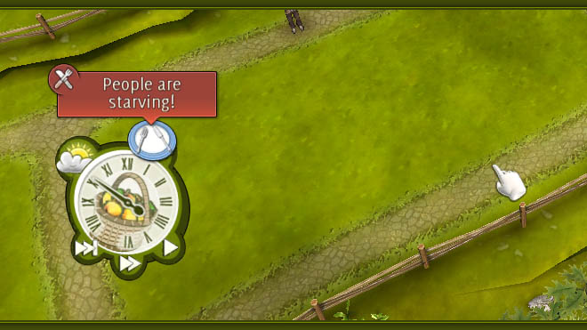

Family Farm
Bir aile çiftliğini işletmek, sanal ortamda gerçekten oldukça kolay. Family Farm, toprak ve hayvanlarla uğraşmanın zorluklarını atlatarak eğlencesini bize yaşatıyor.

Büyük bir şirketin CEO’su, yıllık izninde tatile gitmiş. Nehir kıyısında bulunan küçük bir köyde konaklamış. Köyde oturan delikanlılardan, birisiyle köyün kahvesinde sohbet ediyormuş. Neler yaptığını anlatmış. Sonrasında ise “Hayalim, emekli olduktan her şeyi satıp savıp böyle küçük bir köye yerleşmek. Bütün gün küçük evimle ilgilenmek, nehirde balık tutmak, erkenden kalkıp bahçemde ektiğim sebze meyvelerle ilgilenmek, hatta belki atımla ovada gezmek.” demiş. Sonra delikanlıya dönüp “Sen neler yapıyorsun?”, diye sormuş. Delikanlı cevap vermiş:”Küçük bir köyde yaşıyorum. Bütün gün küçük evimle ilgileniyorum, yemek için balık tutuyorum, ardından tarlamdaki meyve ve sebzelerimle ilgileniyorum. Sonrasında da atım ve köpeğimle geziyorum.” :-)
Var mıdır bu tip hayalleriniz? Çok uzun hikâye değil mi? Herkes bırakıp gitmekten bahseder de sadece birkaçı yapabilir. Eski köleler bizden daha mı şanslıydılar acaba? Modern köleler olarak, birileri 3-5 daha fazla kazansın diye, sağlığımızdan hatta hayatımızdan oluyoruz biz de. Gençken para kazanmak için sağlığımızı ve hayatımızı harcıyor; yaşlılıkta ise sağlık ve hayatımız için paramızı harcıyoruz. İşin en kötüsü de, bizim bileklerimize bağlı olan pranga ve zincirler gözle görülüp elle tutulmuyor. O yüzden onları koparmak çok zor değil mi? :-)
Neyse ki sanal ortamda hayal ettiğiniz kişi olmak, bu kadar zahmetli değil. Family Farm, sıfırdan başlayarak, hayallerinizdeki aile çiftliğinizi kurabileceğimiz bir dünyaya götürüyor bizi. Küçük bir kulübe içinde yaşayan, birkaç meyve ağacı ve birkaç tavuğu olan sevimli bir çift olarak başladığımız oyunda, hem ailemizi hem de çiftliğimizi büyütmeye çalışıyoruz.
Oyunumuz, bağımsız bir geliştirici olan Hammerware tarafından geliştirilen DRM-Free lisanslı bir oyun. GNU/Linux sürümü, Desura üzerinden, Ubuntu Yazılım Merkezi’nden ve Gameolith sitesinden [1] 15$ karşılığında alabilirsiniz.
Oyunun asgari sistem gereksinimleri:
- Linux kernel 2.6.X (32/64 bit)
- 1.6 Ghz Pentium 4 ya da AMD Athlon XP 2000
- 512 MB RAM ana bellek
- 250 MB disk alanı
- 128 MB OpenGL 2.0 destekli GeForce FX5200 ya da Radeon 9500 ekran kartı

Oyunumuz Ogre motorunu kullanıyor. MIT lisansına sahip motor, özgür bir yazılım. Oyunu ilk açtığınızda, bir kayıt slotu için sizden profil adı girmeniz istenecek. Sonrasında ise ana menü önünüze gelecek. Oldukça basit.
“Continue” bulunduğunuz hikâyede kaldığınız yerden devam etmenizi sağlar. İlk oyunda pasiftir hâliyle.
“Start a story” yeni çiftlik ve hikâye seçerek, yeni bir oyuna başlamanızı sağlar.
“Custom story” oyunun parametrelerini istediğiniz biçimde değiştirerek, istediğiniz şekilde oyun oynamanızı sağlar. Burada arazi tipini, ev tipini, oyun zorluk derecesini, para miktarı, süre kısıtlaması, aile birey sayısı ve kiralık işçi seçeneklerini kendi isteğinize göre ayarlayabilirsiniz. Ancak arazi ve ev tipiniz için, belli kademleri geçmiş olmanız gerekiyor. Oyunlarda verilen işleri başardıkça deneyim puanı kazanarak, derece atlarsınız.
“Manual” İnternet tarayıcısını açarak, oyunun sitesine bağlanır ve çevrimiçi kılavuza bağlanır. İnternet bağlantınız olması gerekir bu kısım için.
“Credits” oyunu yapan ekibi listeler.
“Options” oyunun seçeneklerini açar. Grafik, ses ve dil ayarlarını buradan ayarlayabilirsiniz.
“Leave game” oyunu kapatır.
Oyunu açtığınızda, “Start a story” diyerek, ilk görevimizi ve çiftliğimizi alıyoruz.

İlk görev, bir çeşit alıştırma görevi. Sol alt köşedeki şapkalı amcamız, bize neyi nasıl yapmamız gerektiğini görev boyunca anlatacak. Oyunumuzun ekranı yukarıda görüldüğü şekilde. Oldukça kolay kontrollere sahip basit bir oyun Family Farm.
Sol en üst köşede mevcut paramızı görüyoruz. Para, çiftçilik hasatları yaptıkça artıyor. Meyve toplamak, yumurta toplamak, sebze toplamak, koyun kırpmak, odun kesmek gibi hasatlar bize para kazandırıyor. Giderlerimiz ise yemek, tohum, hayvan ve görsel aksesuarlar (çiftlik edevatları, çiçekler ve parklar gibi). Paranız biterse, eksiye düşebiliyorsunuz. Ancak eksiye düşme, sadece ekmek için tohum almak ve yemek yapmak için geçerli. Paranız eksi durumdaysa, evi genişletmek, park harcamaları, işçi tutmak ya da hayvan almak gibi harcamaları yapamıyorsunuz. Bir de verilen süre içinde (1 sene içinde) eksi durumdan kurtulmak zorundasınız, yoksa oyun bitiyor.
Hemen yanındaki not kâğıdı, sezon içinde yapmanız gereken işleri gösteriyor. İlk sırada acil olan işleriniz listeleniyor. Sezonlar oyunda gün olarak belirtiliyor. Sezon içinde birkaç sepet meyve toplamaktan; 3-4 yıl içinde toptan siparişleri karşılamak gibi para kazandıracak işleri içeriyor bu liste. Listede değişiklik olduğunda üzerinde kırmızı daire içinde bir ünlem işareti belirecektir.
Hemen yanında ise tecrübe durumumuz var. Aldığınız işleri bitirdikçe tecrübeniz artıyor. Buradaki yıldız simgesine bastığımız zaman, bulunduğumuz konumdaki tecrübe puanımız, sonraki kademeye kaç puan kaldığı gibi ayrıntılı bilgilere ulaşabiliyoruz.
Ortadaki işçi simgesi ise, o an boşta olan kaç işçimiz olduğunu belirtiyor. Bu simgeye her tıklayışımızda, boşta olan işçler seçili hâle geliyor. Her defasında bir işçi seçebiliyoruz. Birden fazla işçiyi aynı anda seçmek gibi bir fonksiyon yok. Bunu gerektirecek bir durumla da karşılaşmıyorsunuz zaten.

Bir işçiyi seçtiğinizde üzerinde elmasa benzer bir işaret çıkıyor. Sağ üst köşede ise seçili işçimizin bilgileri çıkıyor. İşçimizin portresi ve adının sağ tarafında bulunan işaretler, bu işçinin yorgunluk ve açlık durumunu gösteriyor. Daire içindeki Z harfi, işçi yoruldukça; çatal bıçak ise acıktıkça dolacaktır. Burada Carl, hiç yorgun değil ancak çimleri yiyecek kadar aç. :-)
Carl, burada yazana göre de bir aile üyesi. Yani kiralanmış bir işçi değil. Oyunda, aile bireylerinin yanında, sezonluk işçiler de kiralayabiliyorsunuz. Bu işçiler, yeteneklerine göre ücret alıyorlar elbette. Vasıfsız olanlar ucuz oluyorlar, ancak her işi de yapamıyorlar. Vasıflı olanlar, yetenekli oldukları işleri daha düzgün ve hızlı yapabiliyorlar. Ama hâliyle daha fazla ücret talep ediyorlar.
Her işçinin 5 yeteneği ve 4 tane de özelliği var. Yetenekler, işçileri yolladığınız işlere göre gelişirken, özellikler ise, işçinin durumuna (moral ve yaş) göre değişkenlik gösteriyor. Yani yetenekler sizin kontrolünüzde ama özellikler değil. Bu yeteneklere gelecek olursak:
Tilth: Toprak çapalama işi. Çapa ve kürek ile yapılacak işlerdeki ustalık derecesini belirtir. Bu özellik, herhangi bir tarla ya da sebze ekmeden önce toprağı ekime hazırlamada önemlidir. Toprak çapalandıkça tarıma hazır hâle gelir. Toprağı çapalama işini, bu yeteneği yüksek bir karaktere yaptırırsanız, toprağın kalitesi artacaktır. Bazı sebzeler her türlü toprakta yetişebiliyor, ama bazıları ise belli kalitede toprak istiyor. Ekim yaparken buna dikkat etmeniz gerekeceği gibi, çapalamayı da işinin ehli bir işiçiye vermeniz, ekinin yetişmesini etkileyecektir.
Hard work: El işlerindeki ustalık. İşçinin testere, pense gibi alet edevat ile olan ilişkisinin derecesi. Ahır, kümes inşa etmek ya da evimizi genişletmek için gereken yetenek.
Plants: Ekim dikimdeki ustalık. Çapalamadan sonra, hasada kadar ekili alanlarla ilgilenilmesi gereken işçide yüksek olması gereken yetenek. Ekim ve sulama işlerini hızlı ve etkili yapmak için gereken yetenek.
Animals: Plants yeteneğinin hayvanlar için olanı. Koyun kırpmaktan başlayın da atları ehlileştirmek, inekleri sağmak gibi işler için yüksek olması gereken yetenek. Bu yeteneği düşük olan birini koyunu kırpmaya yollayın, sonra da işçi ile koyunun kaçma ve kovalamasını izleyin. Koyunu kırpmadaki beceriksizliği bir yana, hayvanı yakalaması yarım gün alacaktır. :-)
Cooking: Aşçılık yeteneği. Yukarıda işçilerimizin acıktıklarından bahsetmiştik. İşçilerimizi doyurmak için, mutfağımızda yemek hazırlamak durumundayız.

Evinizde, üzerinde küçük bir çan olan duvar mutfağınızı gösteriyor. Buraya tıkladığınızda yemek menünüz açılır. Buradan yapacağınız yemeği seçmeniz gerekiyor. Yemeğe tıkladığınızda, sağ tarafta açıklamaları görebilirsiniz. Yemeğin portresinin altında yemeğin bir porsiyon fiyatını görebilirsiniz. Yani bu yemekten hazırlamanın bir işçi için olan fiyatı. Bu yemeği yapmanın fiyatı buradaki rakam çarpı işçi sayınız oluyor. Üstteki yıldızlar, o yemeği yapmak için görevlendireceğiniz aşçının, Cooking yetenek seviyesini göstermektedir. Eğer hiç yıldız yoksa, herhangi bir işçi, o yemeği hazırlayabilir demektir. Burada da elbette tecrübe durumumuza göre açılmış olan yemekleri pişirebiliyoruz. Yemeklerin, işçilerin morallerini yükseltme etkilerinden başka, sol alt kısmında bulunan “+” işareti, o yemeğin, işçilerin özelliklerinden birini yükselteceği anlamına geliyor. Bu özelliğin süresi ise, o yemeği pişiren aşçının, aşçılık yeteneğine göre değişiyor.
Buradan hazırlamak istediğimiz yemeği seçtikten sonra, mutfağımızın büyüklüğüne göre (ilk anda iki aşçılık kapasitede oluyor), işçilerimizi yemek hazırlaması için burada görevlendirebiliyoruz.
Yeteneklerimiz bunlar. Buralarda işçileri çalıştırdıkça bu yetenekler gelişecektir. Özelliklerimiz ise:
İşler için işçileri görevlendirdiğimizi belirtmiştik. Bunun için çiftliğin iş alanlarının sol alt tarafında iş simgesinin çıkması gerekiyor. Sarı bir dişli çark içinde insan şeklinde bir simge. Ancak dişlinin içindeki insan figürü sayısı, o bölgeye gönderebileceğiniz azami işçi sayısını belirtir. Mesela dişli içinde 3 insan figürü varsa, oraya en fazla 3 işçi gönderebilirsiniz demektir.
İş simgesi üzerine farenizi getirdiğiniz zaman, işin ne olduğunu yazan ve işin yapılması için gereken yeteneğin ne olduğu ve ne kadar seviye gerektirdiğini gösteren bir pencere açılır. Eğer iş yetenek gerektirmiyorsa, yetenek simgesi yerine, bir el simgesi çıkacak ve yıldızlar da pasif olarak belirecektir. Bu işler genelde meyve – sebze toplama, balık tutma ve yumurta toplamak, tavukları yemlemek gibi işlerdir. Yani bir işe, işçi yollarken, buna dikkat edin.
Ekranın sağ alt köşesinde bulunan simgelerden en soldaki iş alanları simgesi.

Yani, buradan çiftliğinizin arazisi üzerine istediğiniz iş alanını (ağıl, kümes, sebze bahçesi, tarla gibi) yerleştirebiliyorsunuz. Elbette bunun için paranız olması gerekiyor. Çiftliğimizdeki iş alanlarımız sol baştan başlarsak:
İş alanlarımız da bunlar. Bunları alıp yerleştirmek yeterli olmuyor elbette. Yapılması gereken işler, sonrasında da bazı seçimler yapmanız gerekebiliyor. Mesela bir meyve ağacı için iş alanı açtınız. Önce bir işçi göndererek, araziye bir delik açıyorsunuz. Sonrasında ise iş alanımızı üzerinde bir soru işareti beliriyor. Bu, seçebileceğiniz meyve ağaçları içinden, oraya hangi ağacı ekmek istiyorsanız onu seçmeniz gerektiği anlamına geliyor. Bu araziye tıkladığımızda ise katalog açılacak ve seçebileceğimiz ağaçları (elma, erik, şeftali gibi) özellikleri ve fiyatı ile görüp istediğiniz ağacı alabilirsiniz. Dikkat etmeniz gereken, ağacın istediği kalitede toprak, hava koşulları ve elbette fiyatı.
Eğer arazi parçasından, iş alanını silmek isterseniz, o alanı seçip “Clear title”a tıklamanız yeterli.
İş alanı simgemizin hemen yanında ise dekorasyon simgemiz var. Buradan çiftlik aksesuarlarımızı veya çiçeklerimizi, çiçek alanları ya da açtığımız bahçelere yerleştirebiliyoruz. Eğer, çiçeklerinizden sıkılmışsanız, bunları bahçeleriniziden toplayarak, sağ alttaki slotlara koyabilirsiniz. Buradan başka bir yere taşıyabilir ya da burada çiçek varken, sağ en üst köşedeki X işaretine basarak bunları satmış olursunuz.
Dekorasyondan sonra, hayvan taşıma simgemiz var. Buradan hayvanlarınızı bulundukları ağıldan alarak, diğer bir ağıla taşıyabilirsiniz. Eğer orada yer varsa elbette. Bu fonksiyonun pratik değeri, aynı çiçeklerde olduğu gibi, aldığınız hayvan slottayken çıkış yaparsanız, o hayvanı satmış olursunuz.
Hemen onun sağında ise katalog simgemiz var. Buraya, zaten hayvan almak, tohum almak istediğinizde geliyorsunuz. Buradan alabileceğiniz hayvanların, çiçeklerin, tohumların, ağaçların tümünü ayrıntıları ile görebilirsiniz.
Ekranın sol alt kısmında ise zamanı gösteren saatimiz var.

Mevsimler, oyunda bir gün olarak geçiyor. Sabah saat 8’den, akşam saat 6’ya kadar çalışıyoruz. Saat 6 olup da aile eve döndüğünde bir mevsim geçmiş oluyor ve 4 mevsim (oyunda 4 gün oluyor) geçince bir sene geçmiş oluyor. Yani işleri yaparken bir gözünüz saatin üzerinde olsun. Saatin sol üstünde hava durmunu görebiliyoruz. Buradaki durum, ektiğimiz ekinlerimiz için önemli. Hasat zamanı geldiğinde, hasada başlayacağınızda, ekinlerinizin üzerinde bir % göreceksiniz (%65 gibi). Hava ve toprak koşulları ekininiz için uygunsa, bu yüzde oranı da o kadar yüksek olacaktır. Yani o kadar fazla hasat alabileceksiniz.
Saatin sağ üstünde yemek tabağı çıktığı zamansa, yemeği hazırlamaya başlayabilirsiniz demektir. Bu simge ortaya çıkmadan yemek hazırlamaya başlayamıyorsunuz. Zaman göstergesi ise bu simgeyi geçmeden işçilerinizi doyursanız iyi olur. Yoksa çalışmayı bırakıyorlar.
En alttaki çift ok şeklindeki tuş, zamanı hızlandırıyor. Hemen solundaki tuş ise, o mevsimi atlamanızı sağlıyor. Eğer aldığınız işleri bitirdiyseniz ve başka bir şey yapmak istemiyorsanız, sezonu bitirebilirsiniz.
Oynanışımız bu şekilde. Oyunu farklı dil destekleri mevcut, ancak aralarında Türkçe yok. Anlatım biraz karışık gibi görünse de aslında oyun esnasında oldukça kolay. Bir kere alıştıktan sonra, kolaylıkla ustalaşabiliyorsunuz.
Ogre oyun motoru, 3 boyut özelliklerinin belli bir kısmını oyunda sergiliyor. Yakınlaşıp uzaklaşabiliyor ve ekranı kaydırabiliyorsunuz. Ancak nesnelerin etraflarında dönemiyorsunuz. Gerekli bir özellik değil oyunda belki ama, 3 boyutun olmazsa olmaz özelliği. Çevre biraz basit kaplamalardan oluşmuş olsa da karakterlerin detay seviyeleri tatmin edici.
Oyunda sesler de oldukça az. Konuşma yok. Ara sıra hayvan sesleri, tabiat sesleri ve zaman zaman çalan bir müzik var. Başka bir şey yok. Ancak bu oyun için eksi bir yön değil.
Zorlayıcılık ve eğlence seviyesi iyi ayarlanmış. Oldukça iyi bir zaman katili olmuş oyun. Ancak başladıktan sonra, birden bırakabileceğiniz bir oyun değil. Sezon ortasında oyunu kaydedemiyorsunuz. Kayıt olayı otomatik sezon sonlarında oluyor. Yani bir sezonu ortasında oyunu bırakırsanız, menüden “Continue” dediğinizde o sezonun başından başlıyorsunuz. İlk başlarda önemli olmasa da sonraki kademlerde işler arttıkça, aynı yeri baştan oynamak zorlayabiliyor. Bu tip oyunlardan hoşlanmasanız bile, eğlenceli vakit geçirmek istediğiniz zaman bu oyunu deneyebilirsiniz.